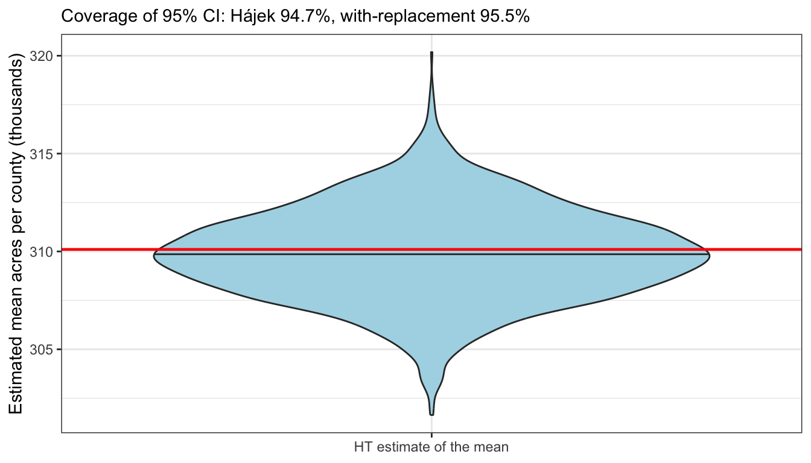

| Store | \(x_i\) (floor area, m\(^2\)) | \(y_i\) (sales) | \(b_i=y_i/x_i\) |
|---|---|---|---|
| A | 100 | 11 | 0.1100 |
| B | 200 | 20 | 0.1000 |
| C | 300 | 24 | 0.0800 |
| D | 1,000 | 245 | 0.2450 |
| Total | 1,600 | 300 | |
| True \(B=\sum y_i/\sum x_i\) | 0.1875 |
7 Unequal Probability Sampling
Unequal probability sampling (UPS) selects units with different probabilities, usually in proportion to a size variable known for every unit in the population. Large units contribute more to a total, so we give them a larger chance of being selected, and correct for this in the estimator. This chapter builds UPS in three steps, each a special case or an extension of the previous one:
- The Hansen–Hurwitz (HH) estimator: the selection probabilities \(\psi_i\) are built from an auxiliary variable \(x_i\), and we estimate the total or mean of \(y_i\) (Section 7.2).
- One-stage cluster sampling: the units are clusters (psus), \(y_i\) is the cluster total \(t_i\), and \(x_i\) is the cluster size \(M_i\) (Section 7.3).
- Two-stage cluster sampling: the cluster total \(t_i\) is not observed, but estimated from a subsample of the cluster (Section 7.4).
Sampling with replacement (UPSWR) is used throughout, since it makes the variance easy to estimate: we make \(n\) independent draws, and on each draw unit \(i\) is selected with probability \(\psi_i\), where \(\sum_{i=1}^N\psi_i=1\). A unit may be selected more than once, and it then appears in the sample once per draw. Sampling without replacement is briefly discussed at the end (Section 7.5).
7.1 Functions and Packages
The estimating functions used throughout this book (in this chapter upswr_est and upswr_total for sampling with replacement, upswo_est for sampling without replacement, srs_est, ratio_est and reg_est for comparison, and the format_est_gt table-formatting helper) live in a single shared file, samplingestimate.r, which we source below.
The full source of samplingestimate.r is listed in Appendix C.
7.2 The Hansen–Hurwitz Estimator
7.2.1 Theory
The population has \(N\) units. Unit \(i\) has a study value \(y_i\), with population total \(t=\sum_{i=1}^N y_i\) and mean \(\bar{y}_U=t/N\), and an auxiliary variable \(x_i>0\) whose total \(t_x=\sum_{i=1}^N x_i\) is known. If \(y_i\) is roughly proportional to \(x_i\) (for example, the number of physicians of a county and its population), we construct the selection probabilities from \(x_i\): \[ \psi_i=\frac{x_i}{t_x}. \]
The ratio of each unit. Define, for every unit of the population, \[ b_i=\frac{y_i}{x_i},\qquad i=1,\ldots,N, \] and let \(B=t/t_x=\bar{y}_U/\bar{x}_U\) be the population ratio. Since \(y_i=x_ib_i\), \(B\) is the mean of the \(b_i\) weighted by \(x_i\), \[ B=\frac{\sum_{i=1}^N x_ib_i}{\sum_{i=1}^N x_i}, \] and once \(B\) is known, the mean and the total follow, \[ \bar{y}_U=\bar{x}_U\,B,\qquad t=t_x\,B,\qquad \bar{x}_U=\frac{t_x}{N}. \] So estimating \(B\) is enough: we build an estimator \(\hat{B}\) and convert it to \(\hat{\bar{y}}=\bar{x}_U\hat{B}\) and \(\hat{t}=t_x\hat{B}\). Everything below, for HH, the ratio estimator and the sample average, is written in terms of the \(b_i\).
The sample \(\mathcal{R}\) and its observations \(b_j^*\). We make \(n\) independent draws with replacement; on each draw, unit \(i\) is selected with probability \(\psi_i=x_i/t_x\). The sample, denoted \(\mathcal{R}\) (not \(\mathcal{S}\)), is the list of the \(n\) draws including repeats: a unit drawn twice appears twice. Let \(b_j^*\) denote the ratio \(b\) of the unit selected on the \(j\)th draw, that is, the \(j\)th observation in \(\mathcal{R}\) (\(j=1,\ldots,n\)). The star reminds us that \(b_j^*\) is indexed by the draw, not by the population unit: \(b_j^*\) is random, while \(b_1,\ldots,b_N\) are fixed numbers.
Sampling distribution of \(b_j^*\). On every draw, \(b_j^*\) equals \(b_i\) exactly when unit \(i\) is selected, so \(b_j^*\) is a discrete random variable with distribution
| Unit selected on draw \(j\) | \(1\) | \(2\) | \(\cdots\) | \(N\) |
|---|---|---|---|---|
| Value of \(b_j^*\) | \(b_1\) | \(b_2\) | \(\cdots\) | \(b_N\) |
| Probability | \(\psi_1=x_1/t_x\) | \(\psi_2=x_2/t_x\) | \(\cdots\) | \(\psi_N=x_N/t_x\) |
(if several units have the same value of \(b_i\), their probabilities add up). Since the draws are made with replacement, the probabilities do not change from draw to draw, and \(b_1^*,\ldots,b_n^*\) are independent and identically distributed (iid) with this distribution. Its mean and variance are \[ E(b_j^*)=\sum_{i=1}^N\frac{x_i}{t_x}\cdot\frac{y_i}{x_i}=\frac{t}{t_x}=B,\qquad S_{b^*}^2=V(b_j^*)=\sum_{i=1}^N\psi_i\,(b_i-B)^2 . \] A single draw is therefore an unbiased estimate of \(B\), and it is a precise one when the \(b_i\) are nearly the same for all units, that is, when \(y_i\) is nearly proportional to \(x_i\).
Hansen–Hurwitz estimator of \(B\). The HH estimator is the average of the \(n\) observations in \(\mathcal{R}\), the mean of the ratios: \[ \boxed{\hat{B}_{\mathrm{HH}}=\bar{b}^*=\frac{1}{n}\sum_{j=1}^n b_j^*} . \] Being the mean of \(n\) iid copies of \(b_j^*\), it is unbiased, and its variance is that of one draw divided by \(n\): \[ E(\hat{B}_{\mathrm{HH}})=B,\qquad V(\hat{B}_{\mathrm{HH}})=\frac{S_{b^*}^2}{n}=\frac{1}{nN}\sum_{i=1}^N w^x_i\,(b_i-B)^2 , \qquad w^x_i=\frac{x_i}{\bar{x}_U}=N\psi_i . \] Here \(w^x_i\) is the size of unit \(i\) relative to the average, so that \(\psi_i=w^x_i/N\), and the variance is a sum of terms involving only \(w^x_i\) and \(b_i-B\). There is no finite population correction, since the draws are independent. For the same reason, the sample variance of the \(b_j^*\) is an unbiased estimate of \(S_{b^*}^2\), which gives \[ \boxed{\widehat{\mathrm{SE}}(\hat{B}_{\mathrm{HH}})=\frac{s_{b^*}}{\sqrt{n}}},\qquad s_{b^*}^2=\frac{1}{n-1}\sum_{j=1}^n\left(b_j^*-\bar{b}^*\right)^2 . \]
Mean and total. Multiplying by the known \(\bar{x}_U\) and \(t_x\), the estimator, its standard error and its estimated standard error all scale by the same constant: \[
\boxed{\;
\begin{aligned}
\hat{\bar{y}}_{\mathrm{HH}}&=\bar{x}_U\,\hat{B}_{\mathrm{HH}}=\bar{x}_U\,\bar{b}^*,\qquad
&\mathrm{SE}(\hat{\bar{y}}_{\mathrm{HH}})&=\bar{x}_U\,\frac{S_{b^*}}{\sqrt{n}},\qquad
&\widehat{\mathrm{SE}}(\hat{\bar{y}}_{\mathrm{HH}})&=\bar{x}_U\,\frac{s_{b^*}}{\sqrt{n}},\\[4pt]
\hat{t}_{\mathrm{HH}}&=t_x\,\hat{B}_{\mathrm{HH}}=t_x\,\bar{b}^*,\qquad
&\mathrm{SE}(\hat{t}_{\mathrm{HH}})&=t_x\,\frac{S_{b^*}}{\sqrt{n}},\qquad
&\widehat{\mathrm{SE}}(\hat{t}_{\mathrm{HH}})&=t_x\,\frac{s_{b^*}}{\sqrt{n}} .
\end{aligned}\;}
\] In the more general notation of unequal probability sampling, \(y_j^*/\psi_j^*=t_x\,b_j^*\) is the estimate of the total from draw \(j\), so \(\hat{t}_{\mathrm{HH}}=\frac1n\sum_{j=1}^n y_j^*/\psi_j^*\). This form works for any \(\psi_i\), not only for \(\psi_i=x_i/t_x\), and is what the function upswr_total computes; for \(\psi_i=x_i/t_x\), the function upswr_est works directly with the ratios \(b_j^*\).
Variance of the mean and total. The variances of \(\hat{\bar{y}}_{\mathrm{HH}}\) and \(\hat{t}_{\mathrm{HH}}\) are \(\bar{x}_U^2\) and \(t_x^2\) times \(V(\hat{B}_{\mathrm{HH}})\). The variance is small when all the ratios \(b_i\) are close to \(B\), that is, when \(y_i\) is nearly proportional to \(x_i\).
7.2.2 Comparison of the HH, Ratio, and Average Estimators of \(B\)
The ratio estimator and the sample average are used with a simple random sample (SRS) \(\mathcal{S}\) of \(n\) units without replacement. Let \(w^x_i=x_i/\bar{x}_U\) be the size of unit \(i\) relative to the average, and \(d_i=y_i-Bx_i=x_i(b_i-B)\) the residuals about the line through the origin \(y=Bx\). Each estimator is also an estimator of \(B\), which is then multiplied by \(\bar{x}_U\) or \(t_x\).
The ratio estimator (Section 5.3.1) estimates \(\bar{y}_U\) by \(\bar{x}_U\,\bar{y}/\bar{x}\). Since \(y_i=x_ib_i\), \[ \hat{B}_r=\frac{\bar{y}}{\bar{x}}=\frac{\sum_{i\in\mathcal{S}}y_i}{\sum_{i\in\mathcal{S}}x_i} =\frac{\sum_{i\in\mathcal{S}}x_i\,b_i}{\sum_{i\in\mathcal{S}}x_i}, \] the mean of the sampled \(b_i\) weighted by \(x_i\) (weights adding up to one), and \(\hat{\bar{y}}_r=\bar{x}_U\hat{B}_r\), \(\hat{t}_r=t_x\hat{B}_r\).
The sample average \(\bar{y}\) ignores \(x_i\). Since \(y_i=x_ib_i=\bar{x}_U\,w^x_ib_i\), \[ \bar{y}=\bar{x}_U\cdot\frac{1}{n}\sum_{i\in\mathcal{S}}w^x_i\,b_i \quad\Longrightarrow\quad \hat{B}_{\mathrm{avg}}=\frac{\bar{y}}{\bar{x}_U}=\frac{1}{n}\sum_{i\in\mathcal{S}}w^x_i\,b_i , \] the mean of the sampled \(b_i\) with weights \(w^x_i\) that do not add up to one, and \(\hat{t}_{\mathrm{avg}}=t_x\hat{B}_{\mathrm{avg}}\).
Table 7.1 compares them with the HH estimator \(\hat{B}_{\mathrm{HH}}=\frac1n\sum_{j=1}^n b_j^*\). Their variances follow from the variances of \(\bar{y}\) and \(\hat{\bar{y}}_r\) for SRS divided by \(\bar{x}_U^2\), using \(w^x_ib_i-B=(y_i-\bar{y}_U)/\bar{x}_U\) and \(w^x_i(b_i-B)=d_i/\bar{x}_U\) (the ratio estimator’s variance is the large-\(n\) approximation), and from the HH variance of the theory section.
| Estimator | Estimator of \(B\) | Variance | \(x_i\) is used at | Unbiased? |
|---|---|---|---|---|
| Sample average (SRS) | \(\hat{B}_{\mathrm{avg}}=\dfrac1n\sum\limits_{i\in\mathcal{S}}w^x_ib_i\) | \(\left(1-\dfrac{n}{N}\right)\dfrac{1}{n(N-1)}\sum\limits_{i=1}^N (w^x_ib_i-B)^2\) | not used | yes, for \(\bar{y}_U/\bar{x}_U\) |
| Ratio (SRS) | \(\hat{B}_r=\dfrac{\sum_{i\in\mathcal{S}} x_ib_i}{\sum_{i\in\mathcal{S}} x_i}\) | \(\approx\left(1-\dfrac{n}{N}\right)\dfrac{1}{n(N-1)}\sum\limits_{i=1}^N (w^x_i)^2\,(b_i-B)^2\) | the estimation stage | slightly biased |
| HH (UPSWR, \(\psi_i=x_i/t_x\)) | \(\hat{B}_{\mathrm{HH}}=\dfrac1n\sum\limits_{j=1}^n b_j^*\) | \(\dfrac{1}{nN}\sum\limits_{i=1}^N w^x_i\,(b_i-B)^2\) | the design stage | exactly unbiased |
Note: for the sample average, \(w^x_i=x_i/\bar{x}_U\) and \(w^x_ib_i=y_i/\bar{x}_U\), so that \(\hat{B}_{\mathrm{avg}}=\bar{y}/\bar{x}_U\) and its variance is the SRS variance of \(y_i\) divided by \(\bar{x}_U^2\).
For the mean and the total, multiply the estimators by \(\bar{x}_U\) and \(t_x\), and the variances by \(\bar{x}_U^2\) and \(t_x^2\).
Ignoring the finite population correction and the difference between \(N-1\) and \(N\), each variance is \(\frac1n\) times an average over the units of one squared term:
| Estimator | Squared term of unit \(i\) | Spread of \(y\) about |
|---|---|---|
| Sample average | \((w^x_ib_i-B)^2\) | the flat line \(\bar{y}_U\) |
| Ratio | \((w^x_i)^2\,(b_i-B)^2\) | the line \(y=Bx\) |
| HH | \(w^x_i\,(b_i-B)^2\) | the line \(y=Bx\), with weight \(1/w^x_i\) relative to the ratio estimator |
The ratio estimator and HH use the same ratios and the same centre \(B\), so their terms differ only in one factor: \((w^x_i)^2\) for the ratio estimator, \(w^x_i\) for HH. HH multiplies the term of the ratio estimator by \(1/w^x_i=\bar{x}_U/x_i\). A unit larger than average (\(w^x_i>1\)) is downweighted under HH, and a smaller one is upweighted. The reason is that HH gives equal weights to the draws because the large units are already drawn more often, whereas the ratio estimator must give the large units larger weights \(x_i\) to compensate for the equal chances. UPSWR therefore wins when the large residuals \(d_i\) belong to the large units, that is, when the spread of \(y_i\) about the line grows with \(x_i\), as it does for county acreages. When the spread of \(y_i\) is the same for all \(x_i\) (so that \(b_i-B\propto1/x_i\)), the SRS ratio estimator does better. When \(y_i\) is not related to \(x_i\) at all, all the \(b_i-B\) are large and both estimators can be worse than the plain sample average. The next section illustrates these cases.
7.2.3 Toy Example: Four Supermarkets
A town has four supermarkets, with floor areas \(x_i\) from \(100\,\text{m}^2\) to \(1000\,\text{m}^2\), so \(t_x=1600\), \(\bar{x}_U=400\) and \(w^x_i=x_i/\bar{x}_U=0.25,\,0.5,\,0.75,\,2.5\). We want to estimate the monthly sales per square metre \(B=\bar{y}_U/\bar{x}_U\), from the ratios \(b_i=y_i/x_i\) of the stores (the mean and the total of sales follow by multiplying by \(\bar{x}_U\) and \(t_x\)). The data for the first population (the sales, in thousands of dollars per month, are nearly proportional to the floor areas) are:
To compare the three estimators of \(B\) in Section 7.2.2, we work out their variances for a single draw (\(n=1\)); for \(n\) draws, each is divided by \(n\). For the two SRS estimators we take \(N=\infty\), that is, we ignore the finite population correction, so a single draw has the variance of one value drawn with equal probabilities \(1/N\) (hence the divisor \(N\) rather than \(N-1\)). The one-draw variance of each estimator is \(\frac1N\) times the sum over the stores of its squared term:
| Estimator | Design | Squared term of store \(i\) |
|---|---|---|
| Sample average | SRS | \((w^x_ib_i-B)^2\) |
| Ratio | SRS | \((w^x_i)^2\,(b_i-B)^2\) |
| HH | PPS, \(\psi_i=x_i/t_x\) | \(w^x_i\,(b_i-B)^2\) |
For each population below, a single table works out the three variances side by side. The Sum row adds the squared terms, and the Variance row divides the sum by \(N\).
Sales proportional to floor area. The monthly sales (thousands of dollars) are nearly proportional to the floor areas, as in the slides for this chapter. Here \(t=300\), \(\bar{y}_U=75\) and \(B=300/1600=0.1875\).
HH is unbiased. With one draw, the HH estimate of \(B\) is \(b_i\) when store \(i\) is selected, which happens with probability \(\psi_i\), so \(E(\hat{B}_{\mathrm{HH}})=\sum_i\psi_ib_i\), the sum of the column \(\psi_ib_i\). Multiplying the estimates by \(\bar{x}_U\) or \(t_x\) gives the estimates of the mean or the total, and the last row (the sum of \(\psi_i\) times the column) is their expectation:
| Store | \(y_i\) | \(x_i\) | \(\psi_i=x_i/t_x\) | \(b_i\) | \(\psi_ib_i\) | \(\bar{x}_Ub_i\) (mean) | \(t_xb_i\) (total) |
|---|---|---|---|---|---|---|---|
| A | 11 | 100 | 0.0625 | 0.110 | 0.00688 | 44 | 176 |
| B | 20 | 200 | 0.1250 | 0.100 | 0.01250 | 40 | 160 |
| C | 24 | 300 | 0.1875 | 0.080 | 0.01500 | 32 | 128 |
| D | 245 | 1,000 | 0.6250 | 0.245 | 0.15313 | 98 | 392 |
| Sum | 300 | 1,600 | 1.0000 | 0.18750 | 75 | 300 |
The four possible estimates of \(B\), 0.11, 0.1, 0.08, 0.245, are all different from \(B=0.1875\), but weighted by their selection probabilities they average to \(E(\hat{B}_{\mathrm{HH}})=0.1875=B\), so \(E(\hat{\bar{y}}_{\mathrm{HH}})=75=\bar{y}_U\) and \(E(\hat{t}_{\mathrm{HH}})=300=t\). In general, \(\sum_i\psi_ib_i=\sum_i\frac{x_i}{t_x}\cdot\frac{y_i}{x_i}=\frac{t}{t_x}=B\). (The same four values are what the ratio estimator gives under an SRS of one store, but there each has probability \(1/4\), so its expectation is 0.1338 for \(B\), and it is biased.)
Variances. The working table for the three one-draw variances:
| Store | \(x_i\) | \(y_i\) | \(w^x_i=x_i/\bar{x}_U\) | \(b_i=y_i/x_i\) | \(b_i-B\) | \((w^x_ib_i-B)^2\) | \((w^x_i)^2(b_i-B)^2\) | \(w^x_i(b_i-B)^2\) |
|---|---|---|---|---|---|---|---|---|
| A | 100 | 11 | 0.25 | 0.110 | -0.0775 | 0.025600 | 0.000375 | 0.001502 |
| B | 200 | 20 | 0.50 | 0.100 | -0.0875 | 0.018906 | 0.001914 | 0.003828 |
| C | 300 | 24 | 0.75 | 0.080 | -0.1075 | 0.016256 | 0.006500 | 0.008667 |
| D | 1,000 | 245 | 2.50 | 0.245 | 0.0575 | 0.180625 | 0.020664 | 0.008266 |
| Sum | 1,600 | 300 | 4.00 | 0.241388 | 0.029454 | 0.022262 | ||
| Variance (Sum / \(N\)) | 0.060347 | 0.007363 | 0.005566 |
The sample average ignores the floor areas, and its variance, 0.0603, is dominated by store D, whose sales are far from \(\bar{y}_U=75\). The ratio estimator measures each store against the line \(y=Bx\) instead, that is, it looks at \(b_i-B\), which cuts the variance to 0.00736. HH uses the same ratios, but the largest term of the ratio estimator, store D’s 0.0207, belongs to the largest store, with \(w_D=2.5\): HH divides it by \(w_D\), giving 0.00827, and the HH variance drops to 0.00557, about 9% of that of the sample average. (Multiplying by \(\bar{x}_U^2=160{,}000\) gives the variances of the estimates of the mean, 9,656, 1,178.2 and 890.5.)
Sales not related to floor area: a poor choice of \(\psi_i\). Now suppose the sales are about the same in all four stores, for example because the large store D is a warehouse outlet with few customers, while the total is still \(t=300\), so \(B=0.1875\) again. The floor area is then a poor size variable, but we still draw with \(\psi_i=x_i/t_x\):
| Store | \(x_i\) | \(y_i\) | \(w^x_i=x_i/\bar{x}_U\) | \(b_i=y_i/x_i\) | \(b_i-B\) | \((w^x_ib_i-B)^2\) | \((w^x_i)^2(b_i-B)^2\) | \(w^x_i(b_i-B)^2\) |
|---|---|---|---|---|---|---|---|---|
| A | 100 | 60 | 0.25 | 0.60 | 0.4125 | 0.001406 | 0.010635 | 0.042539 |
| B | 200 | 80 | 0.50 | 0.40 | 0.2125 | 0.000156 | 0.011289 | 0.022578 |
| C | 300 | 90 | 0.75 | 0.30 | 0.1125 | 0.001406 | 0.007119 | 0.009492 |
| D | 1,000 | 70 | 2.50 | 0.07 | -0.1175 | 0.000156 | 0.086289 | 0.034516 |
| Sum | 1,600 | 300 | 4.00 | 0.003125 | 0.115332 | 0.109125 | ||
| Variance (Sum / \(N\)) | 0.000781 | 0.028833 | 0.027281 |
The ordering is reversed. The sales hardly vary, so the sample average has a tiny variance, 0.000781. The line \(y=Bx\) fits the sales badly, so all the deviations \(b_i-B\) are large, and the ratio estimator and HH, with variances 0.0288 and 0.0273, are more than 34 times worse than the sample average. Dividing by \(w^x_i\) helps little: it downweights the large negative deviation of store D, but upweights the positive deviations of the small stores, by \(4\) for store A. Unequal probability sampling is only as good as the size variable used to construct \(\psi_i\): before using PPS, check that \(y_i\) is roughly proportional to \(x_i\).
7.2.4 Computation Example: Revenue from AI Token Usage
An AI company has \(N=6\) enterprise customers. From its usage logs it knows, for every customer, the number of tokens \(x_i\) (in millions) the customer processed last month, but the revenue \(y_i\) (in thousands of dollars) that the customer generated has to be audited from the billing records, which is costly. Revenue is roughly proportional to token usage, so we draw \(n=5\) customers with replacement, with probabilities \(\psi_i=x_i/t_x\) proportional to the tokens, and estimate the revenue per million tokens \(B\), the mean revenue per customer \(\bar{y}_U\), and the total revenue \(t\).
| Customer | \(x_i\) (million tokens) | \(\psi_i=x_i/t_x\) | \(y_i\) (revenue, $ thousand) | \(b_i=y_i/x_i\) |
|---|---|---|---|---|
| A | 2 | 0.02 | 11 | 5.5000 |
| B | 5 | 0.05 | 24 | 4.8000 |
| C | 8 | 0.08 | 41 | 5.1250 |
| D | 15 | 0.15 | 70 | 4.6667 |
| E | 30 | 0.30 | 155 | 5.1667 |
| F | 40 | 0.40 | 190 | 4.7500 |
| Total | 100 | 1.00 | 491 | |
| True \(B=\sum y_i/\sum x_i\) | 4.9100 |
The \(y_i\) and \(b_i\) columns are unknown to the company before the audit; they are shown here so that we can check the estimates. The largest customer F, with \(\psi_F=0.4\), is likely to be drawn more than once; in our sample it is drawn twice: \[ \mathcal{R}=\{F,\ E,\ F,\ D,\ C\}. \] Both copies of F are kept: each is a separate draw, so each is a separate observation \(b_j^*\). Only these customers are audited.
| Draw \(j\) | Customer | \(x_j^*\) | \(y_j^*\) | \(b_j^*=y_j^*/x_j^*\) | \(b_j^*-\bar{b}^*\) | \((b_j^*-\bar{b}^*)^2\) |
|---|---|---|---|---|---|---|
| 1 | F | 40 | 190 | 4.7500 | -0.1417 | 0.020069 |
| 2 | E | 30 | 155 | 5.1667 | 0.2750 | 0.075625 |
| 3 | F | 40 | 190 | 4.7500 | -0.1417 | 0.020069 |
| 4 | D | 15 | 70 | 4.6667 | -0.2250 | 0.050625 |
| 5 | C | 8 | 41 | 5.1250 | 0.2333 | 0.054444 |
| Sum | 24.4583 | 0.0000 | 0.220833 |
Step 1: HH estimate of \(B\), the mean of the ratios. From the column \(b_j^*\), \[ \hat{B}_{\mathrm{HH}}=\bar{b}^*=\frac{1}{5}\sum_{j=1}^5 b_j^*=\frac{24.4583}{5}=4.8917. \]
Step 2: the HH estimates of the mean and the total. Multiply by the known mean and total of the tokens, \(\bar{x}_U=16.667\) and \(t_x=100\): \[ \hat{\bar{y}}_{\mathrm{HH}}=\bar{x}_U\,\hat{B}_{\mathrm{HH}}=16.667\times 4.8917=81.53,\qquad \hat{t}_{\mathrm{HH}}=t_x\,\hat{B}_{\mathrm{HH}}=100\times 4.8917=489.2. \] The true values are \(B=4.91\), \(\bar{y}_U=81.83\) and \(t=491\).
Step 3: the sample variance of the ratios. From the last column, \[ s_{b^*}^2=\frac{1}{n-1}\sum_{j=1}^5\left(b_j^*-\bar{b}^*\right)^2=\frac{0.220833}{4} =0.055208,\qquad s_{b^*}=0.23496. \]
Step 4: the estimated standard errors. \[ \begin{aligned} \widehat{\mathrm{SE}}(\hat{B}_{\mathrm{HH}})&=\frac{s_{b^*}}{\sqrt{n}}=0.10508,\\ \widehat{\mathrm{SE}}(\hat{\bar{y}}_{\mathrm{HH}})&=\bar{x}_U\,\frac{s_{b^*}}{\sqrt{n}} =16.667\times0.10508=1.75,\\ \widehat{\mathrm{SE}}(\hat{t}_{\mathrm{HH}})&=t_x\,\frac{s_{b^*}}{\sqrt{n}}=100\times0.10508=10.5. \end{aligned} \] For comparison, the theoretical standard error is \(\mathrm{SE}(\hat{B}_{\mathrm{HH}})=\sqrt{S_{b^*}^2/n}=\sqrt{0.05015/5}=0.10015\), that is, \(\mathrm{SE}(\hat{\bar{y}}_{\mathrm{HH}})=1.67\). The estimate \(81.53\) is \(0.17\) estimated standard errors below \(\bar{y}_U=81.83\).
The same HH estimates from the shared function upswr_est (Section 7.2.5 uses it for real data), which takes the \(y\) and \(x\) values of the draws and the population mean and total of \(x\):
Code
upswr_est(y_U[R], x_U[R], xbar_U, t_x, method = "ratio", show.details = FALSE)$estimate |>
format_est_gt("hh_B")| \(\hat{B}_{\mathrm{HH}}\) | \(\mathrm{SE}(\hat{B}_{\mathrm{HH}})\) | 95% CI Lower | 95% CI Upper |
|---|---|---|---|
| 4.89 | 0.11 | 4.60 | 5.18 |
Code
upswr_est(y_U[R], x_U[R], xbar_U, t_x, method = "mean", show.details = FALSE)$estimate |>
format_est_gt("hh_ybar")| \(\hat{\bar{y}}_{\mathrm{HH}}\) | \(\mathrm{SE}(\hat{\bar{y}}_{\mathrm{HH}})\) | 95% CI Lower | 95% CI Upper |
|---|---|---|---|
| 81.53 | 1.75 | 76.67 | 86.39 |
Code
upswr_est(y_U[R], x_U[R], xbar_U, t_x, method = "total", show.details = FALSE)$estimate |>
format_est_gt("hh_total")| \(\hat{t}_{\mathrm{HH}}\) | \(\mathrm{SE}(\hat{t}_{\mathrm{HH}})\) | 95% CI Lower | 95% CI Upper |
|---|---|---|---|
| 489.17 | 10.51 | 459.99 | 518.34 |
7.2.5 Example: Physicians in U.S. Counties (statepop.csv)
The file statepop.csv contains data from an unequal-probability sample of 100 U.S. counties. Counties were chosen with probabilities proportional to their populations, \(\psi_i=x_i/t_x\) with \(x_i\) the population of county \(i\) and \(t_x=255{,}077{,}536\) the population of the US. We want to estimate the total number of physicians \(t\) in the US. Because sampling was done with replacement, large counties like Los Angeles occur multiple times in the sample.
The number of physicians is roughly proportional to the population, which is why this is a good size variable:

All three estimates come from the same quantity, the ratio \(b_j^*=\mathrm{phys}_j^*/\mathrm{popn}_j^*\) of physicians per person of the county selected on draw \(j\). To avoid tiny numbers we measure the population in thousands of people, so that \(b_j^*\) is the number of physicians per 1,000 people. The function upswr_est takes the physicians and populations of the 100 draws, the population mean and total of \(x\) (the number of counties is \(N=3141\), so \(\bar{x}_U=t_x/N\)), and the method.
Physicians per 1,000 people, \(\hat{B}_{\mathrm{HH}}=\bar{b}^*\). The working table lists the ratios \(b_j^*\) of the first draws, their deviations from \(\hat{B}_{\mathrm{HH}}\), and the squared deviations, whose sum gives \(s_{b^*}^2\):
Code
N <- 3141 # counties in the US
popn_k <- popn / 1000 # population in thousands
M_k <- M / 1000
res_phys_ratio_hh <- upswr_est(phys, popn_k, xbar_pop = M_k / N, tx_pop = M_k, method = "ratio")
res_phys_ratio_hh$table| UPSWR Hansen-Hurwitz Estimation: Working Table | ||||
| \(n = 100\) | ||||
| \(i\) | \(b_j^*\) | \(\hat B_{\mathrm{HH}}\) | \(b_j^*-\hat B_{\mathrm{HH}}\) | \((b_j^*-\hat B_{\mathrm{HH}})^2\)1 |
|---|---|---|---|---|
| 1 | 0.29 | 2.24 | −1.94 | 3.78 |
| 2 | 1.96 | 2.24 | −0.28 | 0.08 |
| 3 | 1.96 | 2.24 | −0.28 | 0.08 |
| 4 | 0.51 | 2.24 | −1.73 | 3.00 |
| 5 | 1.72 | 2.24 | −0.51 | 0.26 |
| 6 | 0.87 | 2.24 | −1.36 | 1.86 |
| ... | ... | ... | ... | ... |
| Sum | 223.58 | 2.24 | 0.00 | 260.81 |
| 1 \(s_{b^*}^2 = \sum_i (b_j^*-\hat B_{\mathrm{HH}})^2/(n-1) = 2.63\). | ||||
| \(\hat B_{\mathrm{HH}} = \dfrac{\sum_i b_j^*}{n} = \dfrac{223.58}{100} = 2.24\) | ||||
| \(\mathrm{SE}(\hat B_{\mathrm{HH}}) = \dfrac{s_{b^*}}{\sqrt n} = \dfrac{1.62}{\sqrt{100}} = 0.16\) | ||||
Code
res_phys_ratio_hh$estimate |> format_est_gt("hh_B")| \(\hat{B}_{\mathrm{HH}}\) | \(\mathrm{SE}(\hat{B}_{\mathrm{HH}})\) | 95% CI Lower | 95% CI Upper |
|---|---|---|---|
| 2.24 | 0.16 | 1.91 | 2.56 |
Output Note: Each draw gives an unbiased estimate of the national number of physicians per 1,000 people, and their average is \(\hat{B}_{\mathrm{HH}}=2.236\) physicians per 1,000 people, with a 95% interval of [1.914, 2.558].
Physicians per county, \(\hat{\bar{y}}_{\mathrm{HH}}=\bar{x}_U\hat{B}_{\mathrm{HH}}\), with \(\bar{x}_U=M/N\) the average population of a county:
Code
res_phys_county <- upswr_est(phys, popn_k, xbar_pop = M_k / N, tx_pop = M_k,
method = "mean", show.details = FALSE)
res_phys_county$estimate |> format_est_gt("hh_ybar")| \(\hat{\bar{y}}_{\mathrm{HH}}\) | \(\mathrm{SE}(\hat{\bar{y}}_{\mathrm{HH}})\) | 95% CI Lower | 95% CI Upper |
|---|---|---|---|
| 181.57 | 13.18 | 155.41 | 207.72 |
Output Note: This is the estimate per 1,000 people times the average county population in thousands, \(\bar{x}_U=81.2\), and its standard error is multiplied by the same factor. It averages over counties, each weighted equally, so the many small rural counties pull it down to about 182 physicians per county.
Total physicians in the US, \(\hat{t}_{\mathrm{HH}}=t_x\hat{B}_{\mathrm{HH}}\), with \(t_x=M\) the US population (in thousands):
Code
res_phys_total <- upswr_est(phys, popn_k, xbar_pop = M_k / N, tx_pop = M_k,
method = "total", show.details = FALSE)
res_phys_total$estimate |> format_est_gt("hh_total")| \(\hat{t}_{\mathrm{HH}}\) | \(\mathrm{SE}(\hat{t}_{\mathrm{HH}})\) | 95% CI Lower | 95% CI Upper |
|---|---|---|---|
| 570,304.30 | 41,401.23 | 488,155.27 | 652,453.32 |
Output Note: This is the estimate per 1,000 people times the US population in thousands, so it estimates the national total number of physicians: about 570,304 physicians in the US, with a 95% interval of [488,155, 652,453]. The three estimates carry the same information: the standard errors are in the same proportion as the estimates.
Comparison with estimates based on an SRS sample
Let’s compare our UPSWR results against estimates based on a Simple Random Sample of 100 counties, including the ratio estimator that uses the county population at the estimation stage.
Code
# Read SRS sample, treating -99 as NA
counties <- read.csv("data/counties.csv", na.strings = "-99")
totpop <- 255077536
N <- 3141 # Total number of counties
# 1. Naive SRS estimate for total
res_counties_srs <- srs_est(counties$physician, N = N, estimate = "total", show.details = FALSE)
res_counties_srs$estimate |> format_est_gt("total")| \(\hat{t}\) | \(\mathrm{SE}(\hat{t})\) | 95% CI Lower | 95% CI Upper |
|---|---|---|---|
| 933,410.97 | 491,982.79 | −42,789.62 | 1,909,611.56 |
Code
# 2. Ratio estimate for total using SRS data
res_counties_ratio <- ratio_est(counties$physician, counties$totpop, xbarU = totpop/N, N = N, estimate = "total")
res_counties_ratio$table| Ratio Estimation: Working Table | |||||
| \(n = 100\) | |||||
| \(i\) | \(y_i\) | \(x_i\) | \(\hat y_i\)1 | \(e_i\) | \(e_i^2\) |
|---|---|---|---|---|---|
| 1 | 24.00 | 36,023.00 | 90.31 | −66.31 | 4,397.47 |
| 2 | 44.00 | 73,524.00 | 184.33 | −140.33 | 19,693.17 |
| 3 | 7.00 | 6,408.00 | 16.07 | −9.07 | 82.18 |
| 4 | 11.00 | 19,261.00 | 48.29 | −37.29 | 1,390.49 |
| 5 | 3.00 | 7,649.00 | 19.18 | −16.18 | 261.69 |
| 6 | 327.00 | 188,377.00 | 472.28 | −145.28 | 21,106.52 |
| ... | ... | ... | ... | ... | ... |
| Sum | 29,717.00 | 11,853,116.00 | 29,717.00 | 0.00 | 17,054,519.52 |
| 1 \(\hat B = \sum_i y_i / \sum_i x_i = 0.00\), \(\hat y_i = \hat B\, x_i\), \(s_e^2 = 1.72 \times 10^{5}\). | |||||
| \(\hat t = \hat B\,\bar x_U\,N = 0.00 \times 81,209.02 \times 3,141 = 6.40 \times 10^{5}\) | |||||
| \(\mathrm{SE}(\hat t) = \mathrm{SE}(\hat B)\,\bar x_U\,N = 3.45 \times 10^{-4} \times 81,209.02 \times 3,141 = 87,885.27\) | |||||
Code
res_counties_ratio$estimate |> format_est_gt("total")| \(\hat{t}\) | \(\mathrm{SE}(\hat{t})\) | 95% CI Lower | 95% CI Upper |
|---|---|---|---|
| 639,506.03 | 87,885.27 | 465,122.60 | 813,889.46 |
Code
# 3. Regression estimate for total using SRS data
res_counties_reg <- reg_est(counties$physician, counties$totpop, xbarU = totpop/N, N = N, estimate = "total")
res_counties_reg$table| Regression Estimation: Working Table | |||||
| \(n = 100\) | |||||
| \(i\) | \(y_i\) | \(x_i\) | \(\hat y_i\)1 | \(e_i\) | \(e_i^2\) |
|---|---|---|---|---|---|
| 1 | 24.00 | 36,023.00 | 52.56 | −28.56 | 815.88 |
| 2 | 44.00 | 73,524.00 | 163.74 | −119.74 | 14,337.75 |
| 3 | 7.00 | 6,408.00 | −35.23 | 42.23 | 1,783.70 |
| 4 | 11.00 | 19,261.00 | 2.87 | 8.13 | 66.09 |
| 5 | 3.00 | 7,649.00 | −31.55 | 34.55 | 1,194.03 |
| 6 | 327.00 | 188,377.00 | 504.24 | −177.24 | 31,413.03 |
| ... | ... | ... | ... | ... | ... |
| Sum | 29,717.00 | 11,853,116.00 | 29,717.00 | 0.00 | 11,349,761.43 |
| 1 \(\hat B_0 = -54.23\), \(\hat B_1 = 0.00\), \(\hat y_i = \hat B_0 + \hat B_1 x_i\), \(s_e^2 = 1.16 \times 10^{5}\). | |||||
| \(\hat t_{reg} = N\bar y_{reg} = 3,141 \times 186.52 = 5.86 \times 10^{5}\) | |||||
| \(\mathrm{SE}(\hat t_{reg}) = N\times\mathrm{SE}(\bar y_{reg}) = 3,141 \times 33.49 = 1.05 \times 10^{5}\) | |||||
Code
res_counties_reg$estimate |> format_est_gt("reg_total")| \(\hat{t}_{reg}\) | \(\mathrm{SE}(\hat{t}_{reg})\) | 95% CI Lower | 95% CI Upper |
|---|---|---|---|
| 585,870.60 | 105,177.42 | 377,149.44 | 794,591.76 |
Output Note: The true value is 532,638. Notice how poorly the naive SRS estimate performs (predicting over 800,000) because it ignores county sizes. Both the SRS Ratio and SRS Regression methods perform much better by incorporating auxiliary population data, as does the HH estimator above, which uses the county sizes at the design stage.
Summary. The estimates of the total number of physicians in the US from all the methods above:
| Method | Estimate | SE | 95% CI lower | 95% CI upper | Estimate \(-\) true |
|---|---|---|---|---|---|
| Sample total, \(N\bar{y}\) (SRS) | 933,411 | 491,983 | -42,790 | 1,909,612 | 400,773 |
| Ratio estimator (SRS) | 639,506 | 87,885 | 465,123 | 813,889 | 106,868 |
| Regression estimator (SRS) | 585,871 | 105,177 | 377,149 | 794,592 | 53,233 |
| Hansen–Hurwitz, \(t_x\hat{B}_{\mathrm{HH}}\) (UPSWR) | 570,304 | 41,401 | 488,155 | 652,453 | 37,666 |
The naive SRS total ignores the county sizes: it is far too large, with a huge SE. The ratio and regression estimators use the county populations at the estimation stage and have much smaller SEs, and HH, which uses them at the design stage, has the smallest SE and the smallest error here, even though its sample is of the same size, 100 counties.
7.2.6 Simulation Study using agpop Data
Let’s simulate 2000 random samples of 300 counties to see how UPSWR, with \(\psi_i\) proportional to the acres in 1987 (\(x_i\)), empirically compares to SRS for estimating the total acres in 1992 (\(y_i\)).
Code
# Read population data
agpop <- acres_in_thousands(read.csv("data/agpop.csv", na.strings = "-99"))
agpop <- agpop |> filter(!is.na(acres92), !is.na(acres87))
N <- nrow(agpop)
total_acres92 <- sum(agpop$acres92)
total_acres87 <- sum(agpop$acres87)
acres87 <- agpop$acres87
# Storage vectors for simulation
est_srs300 <- rep(0, 2000)
est_srs300_reg_acres87 <- rep(0, 2000)
est_srs300_ratio_acres87 <- rep(0, 2000)
est_ups300_acres87 <- rep(0, 2000)
for (i in 1:2000) {
# SRS Simulation
srs300 <- sample(1:N, size = 300)
acres92_srs300 <- agpop$acres92[srs300]
acres87_srs300 <- agpop$acres87[srs300]
est_srs300[i] <- srs_est(acres92_srs300, N = N, estimate = "total", show.details = FALSE)$estimate[1]
est_srs300_reg_acres87[i] <- reg_est(acres92_srs300, acres87_srs300,
xbarU = total_acres87/N, N = N, estimate = "total", show.details = FALSE)$estimate[1]
est_srs300_ratio_acres87[i] <- ratio_est(acres92_srs300, acres87_srs300,
xbarU = total_acres87/N, N = N, estimate = "total", show.details = FALSE)$estimate[1]
# UPSWR Simulation (Probability proportional to acres87)
ups300 <- sample(1:N, size = 300, prob = acres87, replace = TRUE)
acres92_ups300 <- agpop$acres92[ups300]
psi <- (acres87 / sum(acres87))[ups300]
est_ups300_acres87[i] <- upswr_total(acres92_ups300, psi, show.details = FALSE)$estimate[1]
}
Output Note: The red line represents the true total acreage, and the line inside each violin is the median. The naive SRS estimator has massive variance. The SRS ratio and regression estimators, which use the 1987 acres at the estimation stage, and UPSWR, which uses them at the design stage, drastically reduce the variance, centering tightly around the true mean; the \(R^2\) in the legend is the proportion of the variance of the naive SRS average that each method removes.
7.2.7 Shinylive App Comparing SRS and UPSWR
The same simulation runs as a standalone app: SRS (average and ratio) with UPSWR (Hansen–Hurwitz) and UPSWO (Horvitz–Thompson). It opens in a new tab, together with its documentation and the full list of apps. Its “Variance reduction vs. SRS average” legend reports the variances of the ratio, HH and HT estimators, simulated and theoretical, relative to the plain SRS average, and illustrates the comparison of the variances in Section 7.2.2. The app describes all the estimators through the ratios \(b_i\), and for the UPSWO estimator it shows the coverage of the confidence intervals based on the Hájek and the with-replacement variance estimators (Section 7.5).
7.3 One-Stage Cluster Sampling with PPS
7.3.1 Theory
In cluster sampling, the units of the HH estimator are clusters (primary sampling units, psus), and the study value of unit \(i\) is the cluster total \(t_i=\sum_{j=1}^{M_i}y_{ij}\). In a one-stage design, every element (secondary sampling unit, ssu) of a selected cluster is observed, so \(t_i\) is known for the sampled clusters. The auxiliary variable is the cluster size \(M_i\), known for all clusters. So the notation of Section 7.2.1 changes as \[ y_i \to t_i,\qquad x_i\to M_i,\qquad t_x\to M_0=\sum_{i=1}^N M_i,\qquad \bar{x}_U\to\bar{M}_U=\frac{M_0}{N}, \qquad \psi_i=\frac{M_i}{M_0}. \] The ratio of cluster \(i\) is \[ b_i=\frac{t_i}{M_i}=\bar{y}_i , \] the mean per element (ssu-level mean) of cluster \(i\), and \(B=t/M_0\) is the mean per element of the whole population, which we denote also by \(\bar{y}_U\). Let \(b_j^*=\bar{y}_j^*\) be the mean per element of the cluster selected on draw \(j\). Then everything in Section 7.2.1 applies:
\[ \boxed{\hat{B}_{\mathrm{HH}}=\bar{b}^*=\frac{1}{n}\sum_{j=1}^n \bar{y}_j^*},\qquad \widehat{\mathrm{SE}}(\hat{B}_{\mathrm{HH}})=\frac{s_{b^*}}{\sqrt{n}},\qquad s_{b^*}^2=\frac{1}{n-1}\sum_{j=1}^n\left(\bar{y}_j^*-\bar{b}^*\right)^2 . \]
That is, the estimate of the mean per element is the plain average of the means of the sampled clusters: large clusters are selected more often, and each selected cluster is then weighted equally. Multiplying by the known constants gives the estimates of the three quantities of interest, with their estimated SEs multiplied by the same constants:
| Quantity | Estimate | Estimated SE |
|---|---|---|
| Mean per element, \(\bar{y}_U=B=t/M_0\) | \(\hat{B}_{\mathrm{HH}}\) | \(s_{b^*}/\sqrt{n}\) |
| Mean per cluster (psu-level mean), \(\bar{t}_U=t/N\) | \(\bar{M}_U\,\hat{B}_{\mathrm{HH}}\) | \(\bar{M}_U\,s_{b^*}/\sqrt{n}\) |
| Total, \(t=\sum_{i=1}^N t_i\) | \(M_0\,\hat{B}_{\mathrm{HH}}\) | \(M_0\,s_{b^*}/\sqrt{n}\) |
The estimator is most precise when the cluster means \(\bar{y}_i\) vary little, that is, when \(t_i\) is nearly proportional to \(M_i\). Note that this differs from the ratio estimator \(\sum_{i\in\mathcal{S}}t_i/\sum_{i\in\mathcal{S}}M_i\) of cluster sampling with a simple random sample of clusters: here the cluster sizes have been used at the design stage, so a plain average replaces the ratio.
7.3.2 Example: Falls in Long-Term Care Homes
A health authority wants to estimate the number of falls over the past year of the residents of its \(N=40\) long-term care homes. From the registry it knows the number of residents \(M_i\) of every home, and \(M_0=3{,}000\) residents in total, so \(\bar{M}_U=M_0/N=75\) residents per home. Visiting a home to review the incident reports of all its residents is costly, so \(n=8\) draws of homes are made with replacement with probabilities \(\psi_i=M_i/M_0\) proportional to the number of residents. The sample is a one-stage cluster sample: every resident of a selected home is reviewed, and \(t_i\) is the number of falls in home \(i\). (The data are made up for illustration.) Home H12 was drawn twice; a repeated draw is kept as a separate observation, and since all its residents are reviewed, it has the same \(t_i\):
| Draw \(j\) | Home | \(M_j^*\) (residents) | \(\psi_j^*=M_j^*/M_0\) | \(t_j^*\) (falls) | \(b_j^*=t_j^*/M_j^*\) (falls per resident) |
|---|---|---|---|---|---|
| 1 | H12 | 180 | 0.060 | 160 | 0.8889 |
| 2 | H03 | 60 | 0.020 | 49 | 0.8167 |
| 3 | H27 | 240 | 0.080 | 205 | 0.8542 |
| 4 | H12 | 180 | 0.060 | 160 | 0.8889 |
| 5 | H31 | 95 | 0.032 | 70 | 0.7368 |
| 6 | H08 | 120 | 0.040 | 118 | 0.9833 |
| 7 | H19 | 45 | 0.015 | 30 | 0.6667 |
| 8 | H36 | 150 | 0.050 | 140 | 0.9333 |
We estimate \(B\), the number of falls per resident, with upswr_est, using the totals \(t_i\) of the sampled homes as ydata and their sizes \(M_i\) as xdata. The working table lists the cluster means \(b_j^*\), their deviations from \(\hat{B}_{\mathrm{HH}}\), and the squared deviations:
Code
res_falls_B <- upswr_est(ti, Mi, xbar_pop = Mbar_U, tx_pop = M0, method = "ratio", decimals = 4)
res_falls_B$table| UPSWR Hansen-Hurwitz Estimation: Working Table | ||||
| \(n = 8\) | ||||
| \(i\) | \(b_j^*\) | \(\hat B_{\mathrm{HH}}\) | \(b_j^*-\hat B_{\mathrm{HH}}\) | \((b_j^*-\hat B_{\mathrm{HH}})^2\)1 |
|---|---|---|---|---|
| 1 | 0.8889 | 0.8461 | 0.0428 | 0.0018 |
| 2 | 0.8167 | 0.8461 | −0.0294 | 0.0009 |
| 3 | 0.8542 | 0.8461 | 0.0081 | 0.0001 |
| 4 | 0.8889 | 0.8461 | 0.0428 | 0.0018 |
| 5 | 0.7368 | 0.8461 | −0.1093 | 0.0119 |
| 6 | 0.9833 | 0.8461 | 0.1372 | 0.0188 |
| ... | ... | ... | ... | ... |
| Sum | 6.7688 | 0.8461 | 0.0000 | 0.0752 |
| 1 \(s_{b^*}^2 = \sum_i (b_j^*-\hat B_{\mathrm{HH}})^2/(n-1) = 0.0107\). | ||||
| \(\hat B_{\mathrm{HH}} = \dfrac{\sum_i b_j^*}{n} = \dfrac{6.7688}{8} = 0.8461\) | ||||
| \(\mathrm{SE}(\hat B_{\mathrm{HH}}) = \dfrac{s_{b^*}}{\sqrt n} = \dfrac{0.1036}{\sqrt{8}} = 0.0366\) | ||||
Code
res_falls_B$estimate |> format_est_gt("hh_B")| \(\hat{B}_{\mathrm{HH}}\) | \(\mathrm{SE}(\hat{B}_{\mathrm{HH}})\) | 95% CI Lower | 95% CI Upper |
|---|---|---|---|
| 0.85 | 0.04 | 0.76 | 0.93 |
Then we multiply by \(\bar{M}_U=75\) for the number of falls per home, and by \(M_0=3{,}000\) for the total number of falls:
Code
res_falls_home <- upswr_est(ti, Mi, xbar_pop = Mbar_U, tx_pop = M0, method = "mean", show.details = FALSE)
res_falls_home$estimate |> format_est_gt("hh_ybar")| \(\hat{\bar{y}}_{\mathrm{HH}}\) | \(\mathrm{SE}(\hat{\bar{y}}_{\mathrm{HH}})\) | 95% CI Lower | 95% CI Upper |
|---|---|---|---|
| 63.46 | 2.75 | 56.96 | 69.95 |
Code
res_falls_total <- upswr_est(ti, Mi, xbar_pop = Mbar_U, tx_pop = M0, method = "total", show.details = FALSE)
res_falls_total$estimate |> format_est_gt("hh_total")| \(\hat{t}_{\mathrm{HH}}\) | \(\mathrm{SE}(\hat{t}_{\mathrm{HH}})\) | 95% CI Lower | 95% CI Upper |
|---|---|---|---|
| 2,538.29 | 109.91 | 2,278.39 | 2,798.20 |
Output Note: The estimated number of falls per resident is \(\hat{B}_{\mathrm{HH}}=0.846\) (SE 0.037), the plain average of the eight cluster means in the working table. A typical home has \(\bar{M}_U\hat{B}_{\mathrm{HH}}=63.5\) falls per year (SE 2.7), and the 40 homes together have about \(M_0\hat{B}_{\mathrm{HH}}=2,538\) falls (SE 110, 95% interval [2,278, 2,798]). The three statements carry the same information: the estimates and the standard errors are in the same proportion.
7.4 Two-Stage Cluster Sampling with PPS
7.4.1 Theory
In a two-stage design, we select \(n\) clusters with replacement with probabilities \(\psi_i=M_i/M_0\), and then take a simple random sample of \(m_i\) elements from the \(M_i\) elements of the cluster on every draw. The cluster total \(t_i\) is no longer observed, so we cannot compute the cluster mean \(b_i=t_i/M_i\) of Section 7.3.1. We estimate it from the subsample, \[ \bar{y}_i=\frac{1}{m_i}\sum_{j=1}^{m_i}y_{ij},\qquad \hat{t}_i=M_i\,\bar{y}_i , \] where \(\bar{y}_i\) is the mean of the subsample. The one-stage formulas carry over with the subsample mean \(\bar{y}_j^*\) of draw \(j\) in place of the cluster mean \(b_j^*\): \[ \boxed{\hat{B}_{\mathrm{HH}}=\bar{y}^*=\frac{1}{n}\sum_{j=1}^n \bar{y}_j^*},\qquad \widehat{\mathrm{SE}}(\hat{B}_{\mathrm{HH}})=\frac{s_{\bar{y}^*}}{\sqrt{n}},\qquad s_{\bar{y}^*}^2=\frac{1}{n-1}\sum_{j=1}^n\left(\bar{y}_j^*-\bar{y}^*\right)^2 , \] and the estimates of the mean per element, the mean per cluster and the total are \(\hat{B}_{\mathrm{HH}}\), \(\bar{M}_U\hat{B}_{\mathrm{HH}}\) and \(M_0\hat{B}_{\mathrm{HH}}\), with their SEs multiplied by the same constants, as in the table of Section 7.3.1. Equivalently, each draw estimates the total by \(\hat{t}_j^*/\psi_j^*=M_0\,\bar{y}_j^*\).
There are two differences from the one-stage case. First, a cluster that is drawn twice is subsampled independently on each draw, so the two draws give different subsample means \(\bar{y}_j^*\), and both are kept as separate observations. Second, no second-stage formula is needed for the standard error. The \(n\) draws are independent, and the values \(\bar{y}_j^*\) differ between draws for two reasons, the choice of the clusters and the choice of the elements within them. The sample variance \(s_{\bar{y}^*}^2\) of the values \(\bar{y}_j^*\) captures both, so the variance of the two-stage estimator is computed in exactly the same way as that of the one-stage estimator. This is a major simplification compared with two-stage SRS of clusters, where the variance has a between-cluster and a within-cluster piece. Of course, a larger subsample \(m_i\) makes \(\bar{y}_i\) closer to \(t_i/M_i\) and reduces the variance, but it does so through \(s_{\bar{y}^*}^2\).
7.4.2 Example: Falls in Long-Term Care Homes, Two Stages
Suppose the health authority of Section 7.3.2 cannot afford to review all the residents of a selected home. On each of the same \(n=8\) draws of homes, with probabilities \(\psi_i=M_i/M_0\), a simple random sample of \(m_i\) residents is drawn, and the number of falls of each sampled resident over the past year is recorded. The data below are made up for illustration. Home H12 was drawn twice, and the two subsamples were drawn independently, so the two draws have different subsample means. The table gives the total number of falls of the \(m_j^*\) sampled residents, their mean \(\bar{y}_j^*\), and the estimated total of the home \(\hat{t}_j^*=M_j^*\bar{y}_j^*\):
| Draw \(j\) | Home | \(M_j^*\) | \(\psi_j^*=M_j^*/M_0\) | \(m_j^*\) | Falls in subsample | \(\bar{y}_j^*\) | \(\hat{t}_j^*=M_j^*\bar{y}_j^*\) |
|---|---|---|---|---|---|---|---|
| 1 | H12 | 180 | 0.060 | 20 | 19 | 0.950 | 171.0 |
| 2 | H03 | 60 | 0.020 | 20 | 15 | 0.750 | 45.0 |
| 3 | H27 | 240 | 0.080 | 20 | 16 | 0.800 | 192.0 |
| 4 | H12 | 180 | 0.060 | 20 | 16 | 0.800 | 144.0 |
| 5 | H31 | 95 | 0.032 | 20 | 18 | 0.900 | 85.5 |
| 6 | H08 | 120 | 0.040 | 20 | 21 | 1.050 | 126.0 |
| 7 | H19 | 45 | 0.015 | 15 | 10 | 0.667 | 30.0 |
| 8 | H36 | 150 | 0.050 | 20 | 17 | 0.850 | 127.5 |
The data enter upswr_est through the estimated totals \(\hat{t}_j^*\) (as ydata) and the sizes \(M_j^*\) (as xdata), whose ratios are the subsample means \(\bar{y}_j^*\). The working table lists them, their deviations from \(\hat{B}_{\mathrm{HH}}\) and the squared deviations:
Code
res_falls2_B <- upswr_est(ti_hat2, Mi2, xbar_pop = Mbar_U, tx_pop = M0, method = "ratio", decimals = 4)
res_falls2_B$table| UPSWR Hansen-Hurwitz Estimation: Working Table | ||||
| \(n = 8\) | ||||
| \(i\) | \(b_j^*\) | \(\hat B_{\mathrm{HH}}\) | \(b_j^*-\hat B_{\mathrm{HH}}\) | \((b_j^*-\hat B_{\mathrm{HH}})^2\)1 |
|---|---|---|---|---|
| 1 | 0.9500 | 0.8458 | 0.1042 | 0.0109 |
| 2 | 0.7500 | 0.8458 | −0.0958 | 0.0092 |
| 3 | 0.8000 | 0.8458 | −0.0458 | 0.0021 |
| 4 | 0.8000 | 0.8458 | −0.0458 | 0.0021 |
| 5 | 0.9000 | 0.8458 | 0.0542 | 0.0029 |
| 6 | 1.0500 | 0.8458 | 0.2042 | 0.0417 |
| ... | ... | ... | ... | ... |
| Sum | 6.7667 | 0.8458 | 0.0000 | 0.1010 |
| 1 \(s_{b^*}^2 = \sum_i (b_j^*-\hat B_{\mathrm{HH}})^2/(n-1) = 0.0144\). | ||||
| \(\hat B_{\mathrm{HH}} = \dfrac{\sum_i b_j^*}{n} = \dfrac{6.7667}{8} = 0.8458\) | ||||
| \(\mathrm{SE}(\hat B_{\mathrm{HH}}) = \dfrac{s_{b^*}}{\sqrt n} = \dfrac{0.1201}{\sqrt{8}} = 0.0425\) | ||||
Code
res_falls2_B$estimate |> format_est_gt("hh_B")| \(\hat{B}_{\mathrm{HH}}\) | \(\mathrm{SE}(\hat{B}_{\mathrm{HH}})\) | 95% CI Lower | 95% CI Upper |
|---|---|---|---|
| 0.85 | 0.04 | 0.75 | 0.95 |
Multiplying by \(\bar{M}_U=75\) and \(M_0=3{,}000\):
Code
res_falls2_home <- upswr_est(ti_hat2, Mi2, xbar_pop = Mbar_U, tx_pop = M0, method = "mean", show.details = FALSE)
res_falls2_home$estimate |> format_est_gt("hh_ybar")| \(\hat{\bar{y}}_{\mathrm{HH}}\) | \(\mathrm{SE}(\hat{\bar{y}}_{\mathrm{HH}})\) | 95% CI Lower | 95% CI Upper |
|---|---|---|---|
| 63.44 | 3.18 | 55.91 | 70.97 |
Code
res_falls2_total <- upswr_est(ti_hat2, Mi2, xbar_pop = Mbar_U, tx_pop = M0, method = "total", show.details = FALSE)
res_falls2_total$estimate |> format_est_gt("hh_total")| \(\hat{t}_{\mathrm{HH}}\) | \(\mathrm{SE}(\hat{t}_{\mathrm{HH}})\) | 95% CI Lower | 95% CI Upper |
|---|---|---|---|
| 2,537.50 | 127.39 | 2,236.28 | 2,838.72 |
Output Note: The estimated number of falls per resident is \(\hat{B}_{\mathrm{HH}}=0.846\) (SE 0.042), the plain average of the eight subsample means. A typical home has 63.4 falls per year (SE 3.2), and the 40 homes together have about 2,538 falls (SE 127). The standard error is computed exactly as in the one-stage example, from the eight values \(\bar{y}_j^*\) alone. Here it is a little larger than the one-stage SE of 0.037, as expected, since the subsample means carry the extra sampling noise of the second stage (for home H12, the two draws gave \(\bar{y}=0.95\) and \(0.80\)); in a single sample this is not guaranteed.
7.5 UPS Without Replacement
7.5.1 Review of UPSWR and the Horvitz–Thompson Estimator
Review of UPSWR in terms of \(\psi_i\). With replacement, each of the \(n\) draws selects unit \(i\) with probability \(\psi_i\), and draw \(j\) gives the unbiased estimate \(y_j^*/\psi_j^*\) of the total \(t\), since \(E(y_j^*/\psi_j^*)=\sum_i\psi_i\,y_i/\psi_i=t\). The HH estimator averages the \(n\) estimates, \[ \hat{t}_{\mathrm{HH}}=\frac{1}{n}\sum_{j=1}^n\frac{y_j^*}{\psi_j^*},\qquad \widehat{\mathrm{SE}}(\hat{t}_{\mathrm{HH}})=\frac{s_u}{\sqrt{n}},\qquad s_u^2=\frac{1}{n-1}\sum_{j=1}^n\left(\frac{y_j^*}{\psi_j^*}-\hat{t}_{\mathrm{HH}}\right)^2 , \] where the SE is easy because the \(n\) estimates are iid. With \(\psi_i=x_i/t_x\), \(\frac{y_j^*}{\psi_j^*}=t_x\,b_j^*\), which gives the estimator \(\hat{t}_{\mathrm{HH}}=t_x\bar{b}^*\) of Section 7.2.1. The drawback of UPSWR is that a large unit can be drawn several times, which is wasteful.
Without replacement. Now \(n\) distinct units are selected, and the design is described by the inclusion probabilities \[ \pi_i=P(\text{unit } i\in\mathcal{S}),\qquad \sum_{i=1}^N\pi_i=n , \] for a sample of fixed size \(n\). For a size variable \(x_i\), we take \(\pi_i=n\,x_i/t_x\) (inclusion probability proportional to size, \(\pi\)ps), which is \(n\psi_i\) for \(\psi_i=x_i/t_x\). A unit with \(n\,x_i/t_x>1\) is included with certainty, \(\pi_i=1\), and the other probabilities are recomputed from the remaining units.
The Horvitz–Thompson (HT) estimator. Weighting each sampled unit by \(1/\pi_i\) gives \[ \boxed{\hat{t}_{\mathrm{HT}}=\sum_{i\in\mathcal{S}}\frac{y_i}{\pi_i}} . \] It has the same form as the HH estimator with \(n\psi_i\) replaced by \(\pi_i\) (the two coincide if no unit is drawn twice). It is unbiased. Let \(I_i=1\) if unit \(i\) is in the sample and \(0\) otherwise, so that \(E(I_i)=P(I_i=1)=\pi_i\). Then \(\hat{t}_{\mathrm{HT}}=\sum_{i=1}^N I_i\,y_i/\pi_i\), and \[ E(\hat{t}_{\mathrm{HT}})=\sum_{i=1}^N\frac{y_i}{\pi_i}\,E(I_i)=\sum_{i=1}^N\frac{y_i}{\pi_i}\,\pi_i=\sum_{i=1}^N y_i=t . \] This needs only \(\pi_i>0\) for all units. The estimator of the mean per unit is \(\hat{t}_{\mathrm{HT}}/N\). When the inclusion probabilities are proportional to a size variable \(x_i\), \(\pi_i=n\,x_i/t_x\), the estimator of the ratio \(B=t/t_x\) is, as for UPSWR, the HT total divided by \(t_x\), \[ \hat{B}_{\mathrm{HT}}=\frac{\hat{t}_{\mathrm{HT}}}{t_x}=\frac{1}{t_x}\sum_{i\in\mathcal{S}}\frac{y_i}{\pi_i} =\frac{1}{n}\sum_{i\in\mathcal{S}}\frac{y_i}{x_i}=\frac{1}{n}\sum_{i\in\mathcal{S}}b_i , \] the plain average of the ratios \(b_i=y_i/x_i\) of the \(n\) sampled units, with \(\widehat{\mathrm{SE}}(\hat{B}_{\mathrm{HT}})=\widehat{\mathrm{SE}}(\hat{t}_{\mathrm{HT}})/t_x\). In cluster sampling, \(y_i=t_i\) and \(x_i=M_i\), so that \(\hat{B}_{\mathrm{HT}}=\hat{t}_{\mathrm{HT}}/M_0\) is the mean per element (Section 7.3.1).
Variances. For a fixed sample size, with the joint inclusion probabilities \(\pi_{ij}=P(i,j\in\mathcal{S})\), \[ V(\hat{t}_{\mathrm{HT}})=\frac{1}{2}\sum_{i=1}^N\sum_{j=1}^N(\pi_i\pi_j-\pi_{ij}) \left(\frac{y_i}{\pi_i}-\frac{y_j}{\pi_j}\right)^2 \qquad\text{(Sen--Yates--Grundy)}, \] which is estimated unbiasedly by summing over the sampled pairs only, each divided by \(\pi_{ij}\): \[ \hat{V}_{\mathrm{SYG}}(\hat{t}_{\mathrm{HT}})=\frac{1}{2}\sum_{i\in\mathcal{S}}\sum_{j\in\mathcal{S}} \frac{\pi_i\pi_j-\pi_{ij}}{\pi_{ij}}\left(\frac{y_i}{\pi_i}-\frac{y_j}{\pi_j}\right)^2 . \] The joint probabilities \(\pi_{ij}\) are hard to compute for most sampling methods, so approximations that need only \(\pi_i\) are used:
Hájek’s approximation (for designs with high entropy), obtained by \(\pi_{ij}\approx\pi_i\pi_j\left[1-\frac{(1-\pi_i)(1-\pi_j)}{\sum_k\pi_k(1-\pi_k)}\right]\) in the SYG estimator: \[ \hat{V}_{\mathrm{H}}(\hat{t}_{\mathrm{HT}})=\frac{n}{n-1}\sum_{i\in\mathcal{S}}(1-\pi_i) \left(\frac{y_i}{\pi_i}-A\right)^2,\qquad A=\frac{\sum_{i\in\mathcal{S}}(1-\pi_i)\,y_i/\pi_i}{\sum_{i\in\mathcal{S}}(1-\pi_i)} . \]
With-replacement approximation: treat the sample as \(n\) draws with \(\psi_i=\pi_i/n\) and use the UPSWR formula, \[ \hat{V}_{\mathrm{WR}}(\hat{t}_{\mathrm{HT}})=\frac{n}{n-1}\sum_{i\in\mathcal{S}}\left(\frac{y_i}{\pi_i}-\frac{\hat{t}_{\mathrm{HT}}}{n}\right)^2 . \] It ignores the factors \(1-\pi_i\) that account for sampling without replacement, so it overestimates the variance, the more so the larger the \(\pi_i\).
For the mean per unit, divide the estimate and the SE by \(N\); for the ratio \(\hat{B}_{\mathrm{HT}}\), divide by \(t_x\).
7.5.2 Example: Acres of Farmland in Counties (agpop.csv)
We draw a sample of \(n=100\) of the counties of agpop without replacement, with inclusion probabilities \(\pi_i=100\,x_i/t_x\) proportional to the acres in 1987 (\(x_i\)), and estimate the mean acres of farmland in 1992 (\(y_i\)) per county. (The few counties with no farmland in 1987 cannot be selected and are left out.) The sample is drawn by maximum entropy sampling, a fixed-size design with these inclusion probabilities, from the R package sampling; a county with \(100x_i/t_x>1\) would be included with certainty (none is here).
Code
library(sampling)
agpop <- acres_in_thousands(read.csv("data/agpop.csv", na.strings = "-99"))
agpop <- agpop |> filter(!is.na(acres92), !is.na(acres87), acres87 > 0)
N <- nrow(agpop)
n <- 100
tx <- sum(agpop$acres87)
pik <- inclusionprobabilities(agpop$acres87, n) # pi_i = n x_i / t_x
set.seed(348)
q_me <- UPMEqfromw(UPMEpiktildefrompik(pik), n) # set-up of the sampling design
s <- which(UPMEsfromq(q_me) == 1) # indices of the n sampled counties
y <- agpop$acres92[s]; x <- agpop$acres87[s]; p <- pik[s]The mean per county, estimated by HT with the two variance estimators (the plain sample mean ignores the inclusion probabilities and is shown for contrast), and the ratio \(\hat{B}_{\mathrm{HT}}=\hat{t}_{\mathrm{HT}}/t_x\), the acres in 1992 per acre in 1987:
Code
est_ht_hajek <- upswo_est(y, p, N, method = "mean", variance = "hajek")
est_ht_wr <- upswo_est(y, p, N, method = "mean", variance = "wr")
est_B_hajek <- upswo_est(y, p, N, tx, method = "ratio", variance = "hajek")
est_B_wr <- upswo_est(y, p, N, tx, method = "ratio", variance = "wr")To judge the variance estimators, we repeat the sampling 2000 times, and compute the standard deviation of the 2000 HT estimates, which is the true standard error of the design, and the average of the estimated standard errors:
Code
R <- 2000
sim <- matrix(0, R, 5, dimnames = list(NULL, c("est", "se_hajek", "se_wr", "cover_hajek", "cover_wr")))
for (i in 1:R) {
si <- which(UPMEsfromq(q_me) == 1)
yi <- agpop$acres92[si]
eh <- upswo_est(yi, pik[si], N, method = "mean", variance = "hajek")
ew <- upswo_est(yi, pik[si], N, method = "mean", variance = "wr")
sim[i, ] <- c(eh["Est."], eh["S.E."], ew["S.E."],
eh["ci.low"] <= mean(agpop$acres92) & mean(agpop$acres92) <= eh["ci.upp"],
ew["ci.low"] <= mean(agpop$acres92) & mean(agpop$acres92) <= ew["ci.upp"])
}

| Method | Estimate | Estimated SE |
|---|---|---|
| Sample mean (ignores \(\pi_i\)) | 834.3 | 100.53 |
| HT, Hájek variance | 315.8 | 1.98 |
| HT, with-replacement variance | 315.8 | 2.06 |
Output Note: The true mean is 310.1 thousand acres per county. The plain sample mean, 834.3, is far off because it gives every sampled county the same weight, although the large counties had a larger chance of being selected; the HT estimate 315.8 corrects for that. The Hájek and with-replacement SEs are 1.98 and 2.06. Over the 2000 repeated samples the true standard error of the HT mean is 2.37, and the average estimated SEs are 2.33 for the Hájek approximation and 2.43 for the with-replacement approximation, which is a little too large, as expected. The violin plots show the whole distribution of the two estimated variances, with the true variance (the variance of the 2000 HT estimates) as a red line: both are centred close to it, the with-replacement one slightly above. The HT estimates of the mean are centred at the true mean, as unbiasedness implies. The 95% confidence intervals, estimate \(\pm\) \(t_{n-1}\) SE, cover the true mean in 94.7% of the samples with the Hájek variance and in 95.5% with the with-replacement variance; the latter is a little above the nominal 95% because its variance is too large. The ratio of the total acres in 1992 to that in 1987 is \(\hat{B}_{\mathrm{HT}}=\hat{t}_{\mathrm{HT}}/t_x=0.998\) (SE 0.006, Hájek).
7.6 When to Use Unequal Probability Sampling
WarningRemark: UPS is risky unless y is tied to the size variable
The gain from unequal probability sampling depends entirely on how close the ratios \(b_i=y_i/x_i\) are to a constant, that is, on \(y_i\) being roughly proportional to the size variable \(x_i\) used for \(\psi_i\) or \(\pi_i\). Then the variance in Table 7.1 is small, as for the county acreages. Otherwise,
- the estimate can be much worse than a plain SRS average, as in the second population of Section 7.2.3, where the sales are unrelated to the floor area;
- a unit with a small \(x_i\) but a large \(y_i\) gets a very large weight \(1/\psi_i\) (or \(1/\pi_i\)) when it is selected, so the estimates are unstable, and the sample variance of the \(b_j^*\) that estimates the SE tends to be too small, so that the intervals under-cover.
UPS is therefore used mostly when the size is a good proxy of what is measured: selecting the clusters of a multi-stage survey with probabilities proportional to their number of households or students, auditing by the monetary value of the items, or surveying establishments by their employment. When the size is only loosely related to \(y_i\), use simple random or stratified sampling, with a ratio or regression estimator if \(x_i\) is known, which is much safer than using \(x_i\) at the design stage.